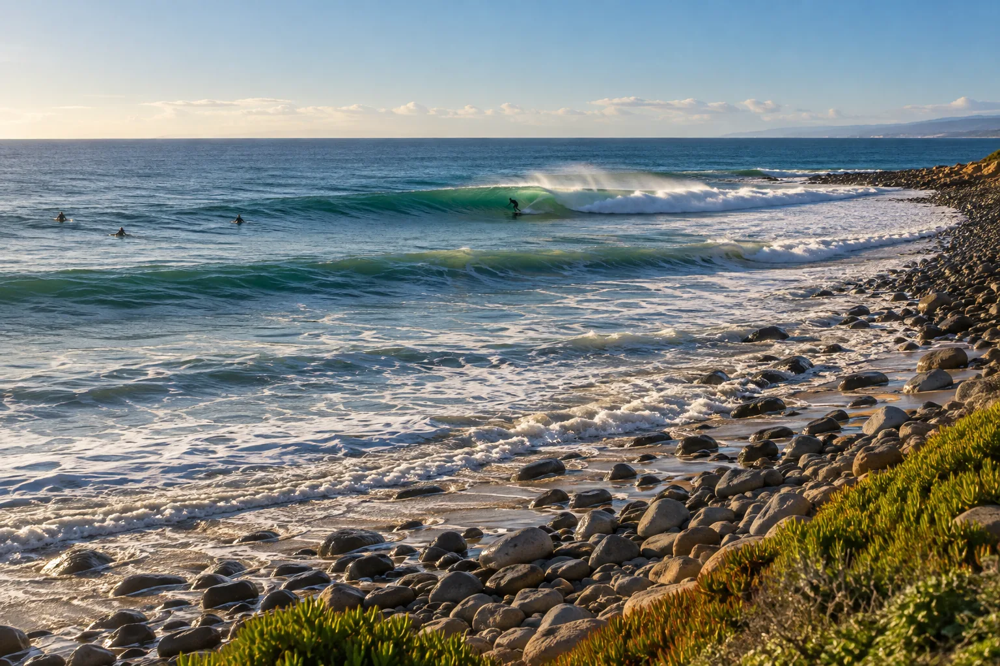

Rincon Point
Californie, États-Unis · surf

« La reine de la côte » : une droite de pointe sur galets, longue et parfaite par houle d’hiver. Un classique californien.
- Lieu
- Californie, États-Unis
- Niveau
- Intermédiaire
- Activités
- surf
- Type d'eau
- Mer / océan
- Coordonnées
- 34.37, -119.48 (position approximative du secteur)
Dangers à connaître
- Fond de galets.
- Foule importante.
Le conseil d'Ocean Buddy
Arrive tôt, le line-up est très local et chargé.
Ouvrir dans Ocean Buddy Télécharger sur l'App Store
Source : Fiche Ocean Buddy · septembre 2026 · à vérifier localement.